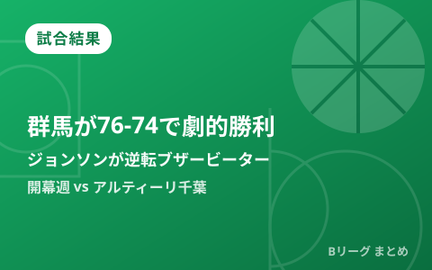

群馬がA千葉に76-74の劇的勝利 ジョンソンの逆転ブザービーターで開幕連勝

9月24日、オープンハウスアリーナ太田で行われたB.PREMIER開幕週、群馬クレインサンダーズvsアルティーリ千葉の第1戦は、終盤までもつれる激戦となりました。73-74とビハインドを負った第4クオーター終了間際、群馬のスタンリー・ジョンソンが逆転の3ポイントシュートをブザーと同時に沈め、76-74の劇的勝利。開幕週を白星でスタートしました。同日行われた開幕週の他カードの結果も合わせて振り返ります。
73-74から土壇場の逆転、ジョンソンが値千金のブザービーター
試合は一進一退の展開となり、第4クオーター終了間際に千葉が73-74とリードを奪う場面もありました。しかし群馬は最後の攻撃でスタンリー・ジョンソンにボールを託し、ジョンソンがブザーと同時に3ポイントシュートを沈めて逆転。76-74で群馬が競り勝ち、開幕週の初戦を白星で終えました。地元・上毛新聞も「終了間際に3点シュートで劇的逆転」と伝えており、地元ファンにとっても忘れられない開幕戦となりました。
ジョンソン16得点、細川は3P4本で12得点、千葉は黒川とニュービルが奮闘
劇的な決勝シュートを決めた群馬のジョンソンはこの日16得点を記録。ベテランの細川も3ポイントシュート4本を含む12得点で勝利に貢献し、藤井祐眞も10得点をマークするなど、複数選手が得点を分け合う勝利となりました。一方で敗れたアルティーリ千葉も黒川が21得点、新加入のニュービルが18得点と奮闘しましたが、最後の逆転劇を防ぐことはできませんでした。
| 選手 | チーム | スタッツ |
|---|---|---|
| スタンリー・ジョンソン | 群馬 | 16得点（決勝の逆転3P含む） |
| 細川 | 群馬 | 12得点（3P4本） |
| 藤井祐眞 | 群馬 | 10得点 |
| 黒川 | A千葉 | 21得点 |
| ニュービル | A千葉 | 18得点 |
開幕週の他カードは、島根が長崎に25点差の圧勝
今シーズンはB1・B2・B3が「B.PREMIER」「B.ONE」「B.NEXT」に刷新されて9月22日に開幕したばかりで、各地で開幕週の熱戦が続いています。前日23日には、島根スサノオマジックが前シーズンの王者・長崎ヴェルカを89-64の25点差で圧倒。20得点をマークした岡田侑大は試合後「40分通して自分たちのバスケットができた」と振り返っています。また開幕カードのアルバルク東京vs琉球ゴールデンキングスは、22日にA東京が84-73、23日に琉球が85-74で勝利し、1勝1敗の五分に終わっています。群馬にとっても今回の逆転勝利は、新カテゴリー「B.PREMIER」での貴重な連勝スタートとなりました。
Q. 群馬とA千葉の開幕週2連戦、2戦目はどうなる？
A. 群馬とA千葉は9月26日（土）に同アリーナで第2戦を予定しています。B.LEAGUEでは開幕週のように同一カードを連戦で組む形式が一般的で、今回のような接戦カードの決着は次戦にも注目が集まります。
出典：バスケットボールキング「Bプレミア開幕戦で群馬がA千葉に劇的勝利…ジョンソンのブザービーターで勝負を決す」／上毛新聞電子版「【詳報】サンダーズ、白星発進 終了間際に3点シュートで劇的逆転 A千葉に76－74《B1開幕戦》」／群馬クレインサンダーズ公式リリース（PR TIMES）／バスケットボールキング「Bプレミア開幕戦で島根が昨季王者の長崎に圧勝」ほか
https://basketballking.jp/news/japan/20260924/634305.html
https://news.yahoo.co.jp/articles/ad3e635d8ad1d8440bc6fcdb2aee87c4506c492e
https://www.jomo-news.co.jp/articles/-/1029479
https://prtimes.jp/main/html/rd/p/000000217.000116683.html
https://basketballking.jp/news/japan/20260924/634257.html